By: Team Drag&Drop Since: Jan 2020
1. Introduction
Study Buddy is a desktop application which is designed for students who wish to manege their module related tasks. More importantly, Study Buddy is optimized for those who prefer to work with a Command Line Interface (CLI) while still having the benefits of a Graphical User Interface (GUI).
You will never have to remember long, wordy commands to use your command line interface, since Study Buddy provides an interactive way of communication, which not only helps to prevent typos, but also makes the application much easier to use!
If you can type fast, Study Buddy can get your module management done faster than traditional GUI apps.
Currently, Study Buddy support both Windows and Mac systems. If you are interested, please jump to the Section 2, “Quick Start” to get started.
Hope you enjoy!
2. Quick Start
-
Study Buddy relies on a particular computer environment to operate correctly, thus to enjoy it, you need to have
Java 11or above installed in your computer. -
When your computer is ready, you can download the latest
studybuddy.jarto get your Study Buddy. -
To better manage your tasks, you may copy the file to the folder you want to use as the home folder for the Study Buddy.
-
Last, double-click the file to start the app and the dashboard should appear in a few seconds.
 Figure 1. Study Buddy Dashboard
Figure 1. Study Buddy Dashboard -
The box with the words
Enter your command here…is where you can key in your desired command and click Enter to execute. -
To view a list of available command, you can key in
helpand click Enter. A more detailed description of our features is available in Section 3, “Features” of this document.
| Study Buddy will analyze your input and reply accordingly. |
3. Features
3.1. Basic features
Command Format
-
Words in
UPPER_CASEare the parameters to be supplied by the user e.g. inadd n/NAME,NAMEis a parameter which can be used asadd n/John Doe. -
S and U stand for Study Buddy and User respectively.
-
When a line is preceded by S, it implies that it is a reply displayed by Study Buddy.
-
When a line is preceded by U, it implies that it is a value that must be entered by the user.
-
[enter] indicates hitting the enter key on your keyboard.
-
[exits] indicates that application has closed.
-
| connects alternative option (i.e. A | B → A or B).
| These features utilize interactive command prompt. (described in section Section 3.6, “Interactive Command Prompt” ) |
3.1.1. Help :
Description:
-
This function displays a list of interactive commands that you can use.
-
It also provides a link to this document, (our user guide) for your convenience.
Format:
U- help
S- list of interactive commands
Example:
U- help
S- Here is the list of available commands:
1. add 2. delete 3. edit 4. bye 5. sort 6. find 7. done 8. delete duplicates 9. sort 10. archive 11. help
12. list 13. clear 14. create mods
3.1.2. Add
Description:
-
This command is for you to record a new task into Study Buddy.
-
Through the interaction, task’s details will be collected.
-
Required information: task name, task type, task deadline or duration
-
Optional information: module, task description, task weight, estimated number of hours needed
-
Format:
Input format requirement:
| Information Type | Format Requirement | Example |
|---|---|---|
|
2 or 3 letters + 4 digits + 1 letter (optional) |
CS2101, CS2103T, |
|
Integer number |
1 |
|
No more than 20 characters |
Demo presentation |
|
Integer number |
1 |
|
Different task types apply different date and time format Deadline (for Assignment): Duration (for other task types):
|
Assignment: Meeting: |
|
No more than 300 characters |
this is a valid description |
|
Positive integer or float number form 0.0 to 100.0 |
12.0 |
|
Positive integer or float number |
10.0 |
- Other constraints
-
-
The application does not allow you to assign date time that has already passed to a task. It must be a time in the future.
-
For duration, the two dates should follow the order of
start date-end date, theend dateshould be later thanstart date. -
The total weight of tasks under the same module is caped to 100.0.
-
All
index numbersshould be positive and within a valid range. (i.e When there is only 5 modules available, the valid module index number range is 1 to 5). .
-
| The application allows for addition of duplicate tasks. It will however confirm with you if you are sure you want to add a duplicate. |
Example:
3.1.3. Edit
Description
-
This command is for you to edit an existing task.
-
To indicate the task you want to edit, you need to provide its index number.
Format
|
Each new value and index number entered will be checked under the same constrain of add command. |
Example:
| After successfully edit the task, the related task record entry will update automatically. |
3.1.4. Clear
This commands clears all data in the Study Buddy.
| Be careful with this command! It will remove any data you may have entered into the Study Buddy and you cannot retrieve it. |
Example:
Say you have finished a semester and would like to clear everything in your Study Buddy and start over.
You can always clear everything!
To clear:
-
Initiate the command using keyword
clear -
Study Buddy should respond with:
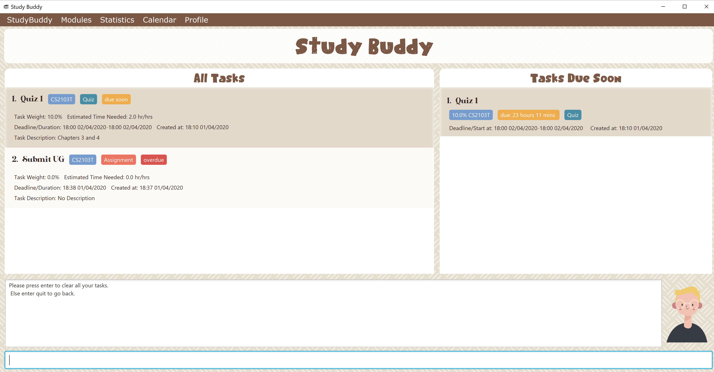Figure 3. Reponse to 'clear'
You can enter quit if you wish to go back!
|
-
Press
enteragain to confirm -
Study Buddy has been cleared completely!
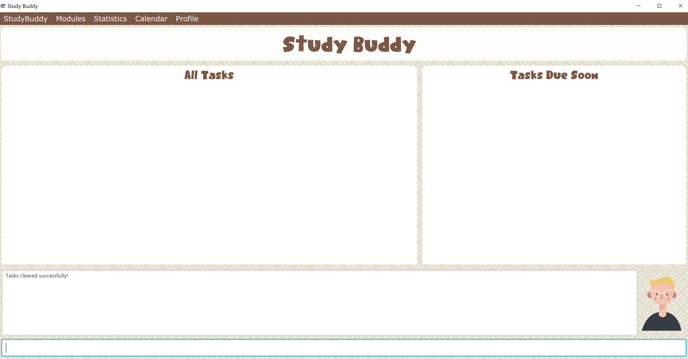Figure 4. View empty Study Buddy
3.1.5. Delete
This commands deletes a task from the existing list, using the index provided by you.
Example:
After having added a task, you realise that there has been a change and you do not need to do that task anymore.
Study Buddy provides you an option to delete that task from the list!
To delete:
-
Initiate the command using keyword
delete -
Study Buddy should respond with:
Figure 5. Reponse to 'delete' -
Type the index of the task you want to delete.
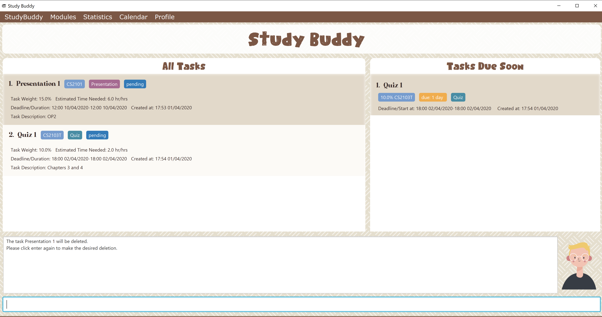Figure 6. Reponse to delete index 1 -
Press
enteragain to confirm -
Task has been deleted! You will notice that the task at the index you selected has disappeared from the list of tasks.
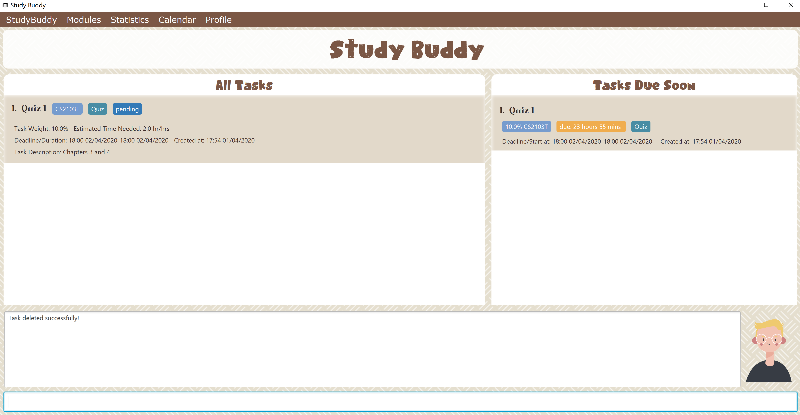Figure 7. Updated list (without deleted task)
3.1.6. Delete duplicates
This commands deletes all duplicated tasks in the list.
| A task is considered duplicate when the name, type, module, description, weightage, estimated time cost and deadline are the same. (Status is not checked) |
Example:
After having added a duplicated task, you realise that there is no more need for this duplicate task. Yet you do not want to scroll through the entire list to delete it.
Study Buddy provides you an option to delete all your duplicate tasks from the list!
To delete duplicates:
-
Initiate the command using keyword
delete duplicates -
Study Buddy should respond with:
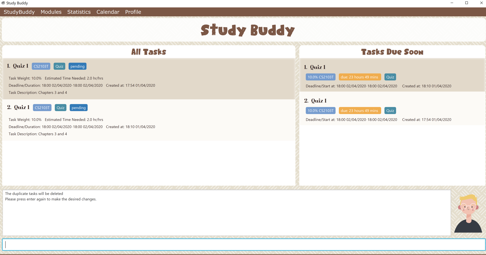Figure 8. Reponse to 'delete duplicates' -
Press
enteragain to confirm -
Duplicate tasks have been deleted! You will notice that only one copy (most recent) of each task will be left in the list.
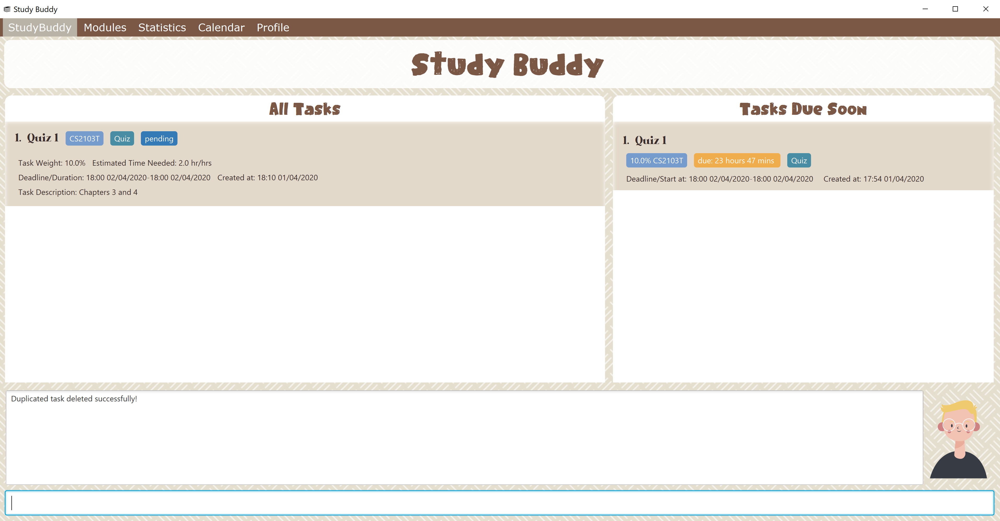Figure 9. Updated list (without duplicate tasks)
3.1.7. Archive/ Unarchive
This commands stores the specified task into a separate list.
Example:
After a hard days work, you completed some tasks. You don’t want them in your to-do list anymore, but you don’t want to delete them; some of the information in the task card could still be useful.
You can always store them in an archive!
To archive:
-
Initiate the command using keyword
archive -
Study Buddy should respond with:
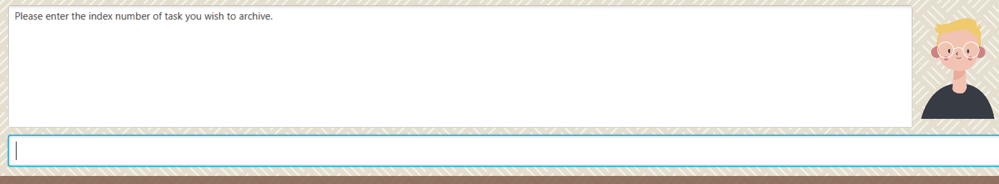Figure 10. Study Buddy’s reponse to 'archive' -
Type the index of the task you want to archive.
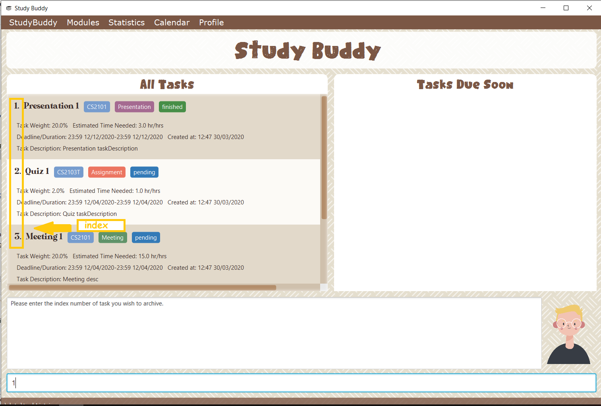Figure 11. Study Buddy’s reponse to task index -
Press
enteragain to confirm -
Task has been archived! You can view all archived task under the
StudyBuddy→Archived Taskstab.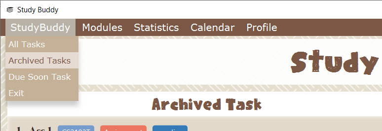Figure 12. View archived tasks
3.1.8. Sort
Description
-
This command is for you to reorder the task list in All Tasks panel.
-
Currently you can sort tasks by their
-
Deadline / Task Start Date
-
Task Name
-
Creation Date & Time
-
Format
Example
The All Tasks Panel will update automatically after successfully sort the tasks.
|
3.1.9. Find
Finds tasks whose names contain any of the given keywords.
Format: find KEYWORD [MORE_KEYWORDS]
Examples:
-
find John
ReturnsjohnandJohn Doe -
find Betsy Tim John
Returns any task having namesBetsy,Tim, orJohn
| To navigate back to the always on display list of tasks, you can use the Section 3.1.10, “List” function. |
3.1.10. List
Format:
U- list
S- done!
Description
-
This function allows you to view a list of all your tasks.
Example:
U- list
S- Here is the complete list of tasks:
3.1.11. Refresh
This commands refreshes the list of tasks due soon as well as status tags.
| Due soon list shows tasks due within the next week. Details are in Section 3.4, “Due Soon Tasks” |
| Status tags include information on the tasks' status. Details are in Section 3.5, “Status Tags” |
Example:
Say you left Study Buddy open overnight because you fell asleep studying. When you wake up, you notice that the time left for the deadline on the due soon tasks is not accurate.
You can refresh them!
To refresh:
-
Say this is what Study Buddy looks like.
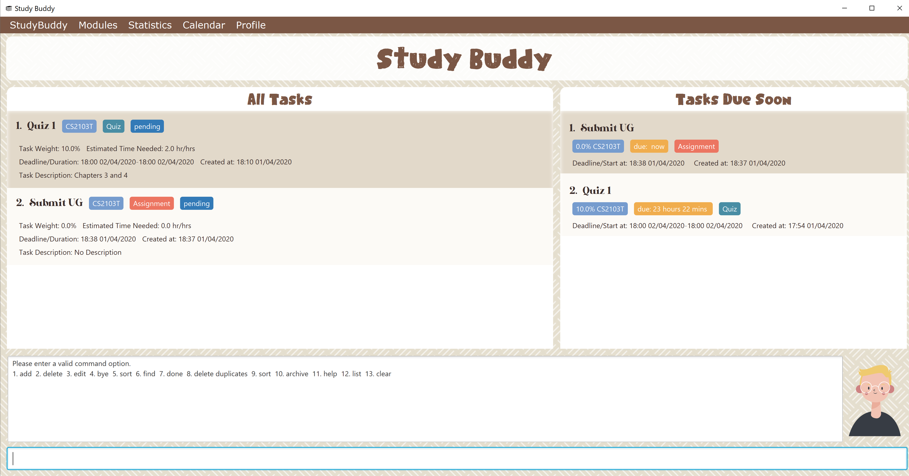Figure 14. Current state (needs to be refreshed)Suppose you notice that the task "Submit UG" is not due "now" anymore because some time has past since the deadline.
-
Initiate the refresh command using keyword
refresh -
Study Buddy should respond with:
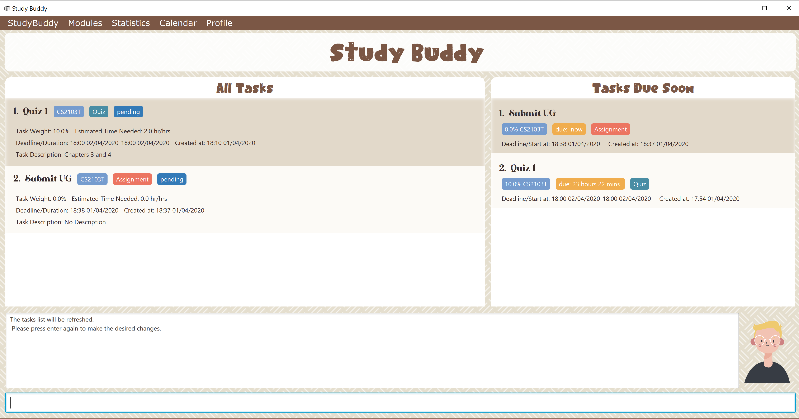Figure 15. Reponse to 'refresh' -
Press
enteragain to confirm -
Tasks have been refreshed!
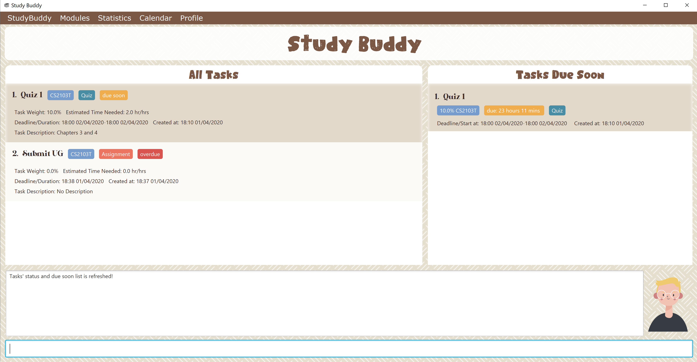Figure 16. View refreshed Study BuddyYou will notice that the overdue task has now moved out of the due soon list and has the updated status tag "overdue".
3.1.12. Exit
This command exits from Study Buddy.
| All your data will be saved and reloaded when you open the application later! You can find details about this in [Saving the data] |
Example:
After working all day, you would like to close the application and have a good night’s sleep.
You can always exit the application!
To exit:
-
Initiate the command using keyword
bye -
Study Buddy should respond with:
Figure 17. Reponse to 'bye' -
Type 'yes' if you want to exit and anything else if you do not wish to exit.
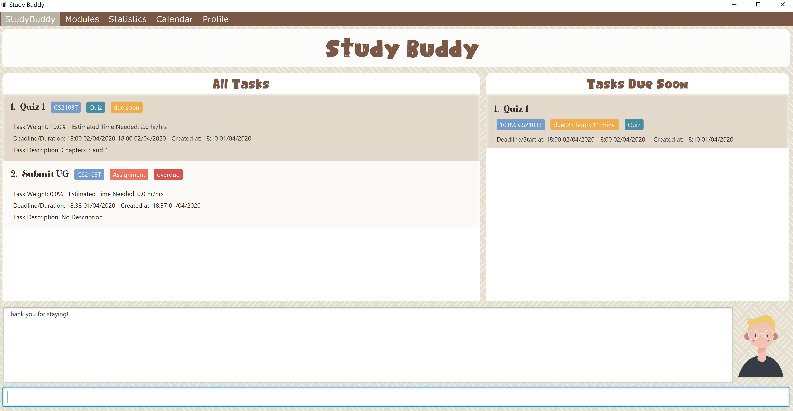Figure 18. Reponse to any command other than 'yes'In response to yes, the application should simply close.
3.2. Saving Data
Study Buddy data is automatically saved in the hard disk after any command that changes the data. + There is no need to save manually.
When the application is closed and re-opened, you should be able to see all the data you had added previously!
3.3. DashBoard
Your menu where all the things you want to see from the app is right here. By default, it shows the following:
-
The impending task from the task list, sorted by timing
-
A chart of the amount of time you spend on each of your modules
-
Existing stopwatches that are already running
3.4. Due Soon Tasks
The due soon task list is always on display in your application under Study Buddy → All tasks
It provides the following functionality:
-
It displays your tasks that are due within the next week. (uses deadline you have provided)
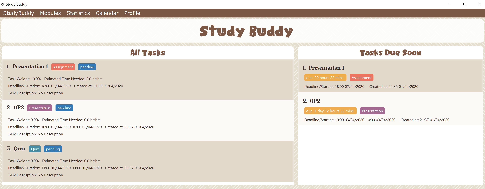Figure 19. Due Soon List -
It automatically sorts these tasks in an ascending order of deadlines.
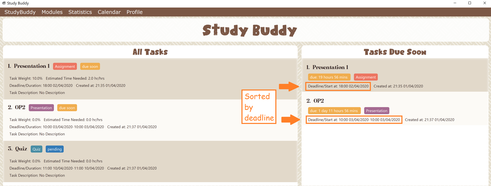Figure 20. Due Soon List -
It automatically adds applicable tasks when you make changes to your main list, such as add (Section 3.1.2, “Add”) or delete (Section 3.1.5, “Delete”).
-
It displays a tag with the time left to the deadline.
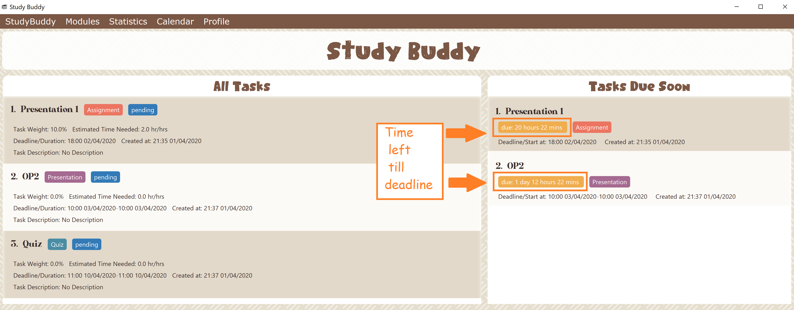Figure 21. Due Soon List -
It provides a Section 3.1.11, “Refresh” function that allows you to refresh time/state of this list if needed.
| Time left is never displayed in days and minutes. Hence if the current time is 9:00 am on 01/04/2020 and the task deadline is 9:02 am on 02/04/2020, it will show time left as 1 day. (not 1 day and 2 minutes) |
| Due soon list will never display finished tasks. If you unarchive a completed task, it will not appear in the due soon list. |
3.7. Statistics
-
Purpose
-
The Statistics page provides summary of tasks' different aspects, such as:
-
Task Status
-
Module related tasks' deadline/ start date
-
Module related tasks' weight
-
-
It utilizes different charts to make the information more visualized and easy to understand.
-
-
Navigate to Statistics Page
-
You can press the Statistics button in the menu bar to navigate to Statistics Page
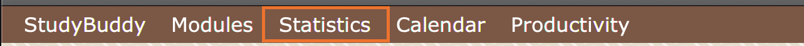Figure 22. Statistics entry
-
-
UI introduction & Charts Provided
-
After press Statistics button from menu bar, the Statistics page will display as its initial status.
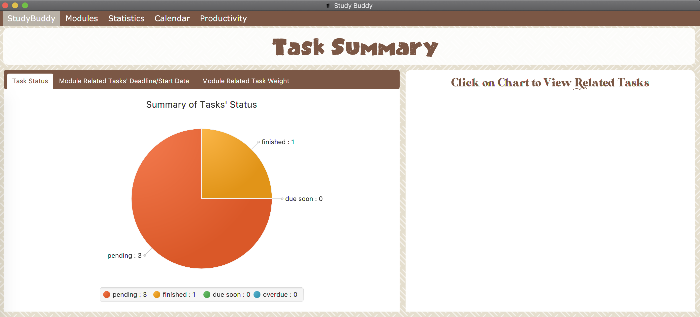Figure 23. Statistics initial page -
The left panel displays different charts, and the right panel will display related tasks when you clicking on the chart.
-
Task Status
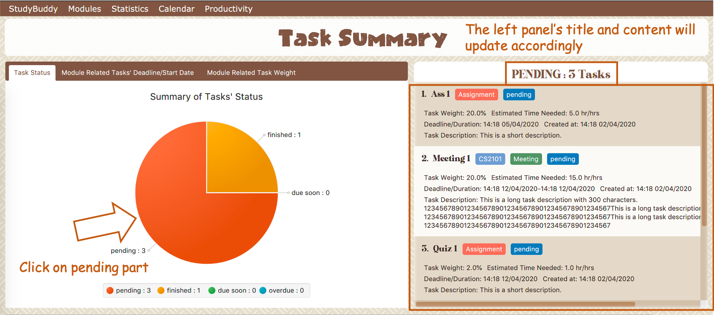Figure 24. right panel update when clicking on pie chart -
Module related tasks' deadline/ start date
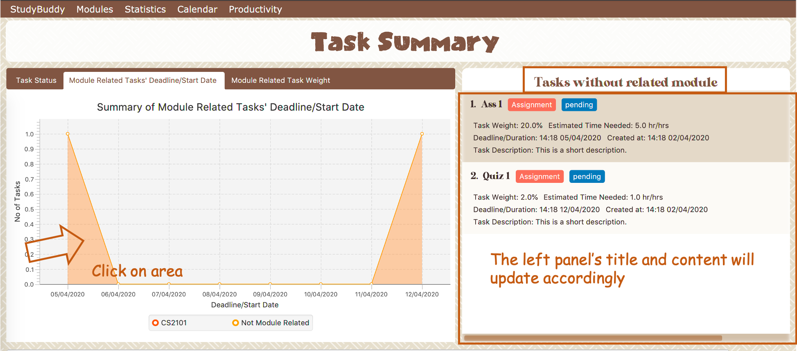Figure 25. right panel update when clicking on area chart’s area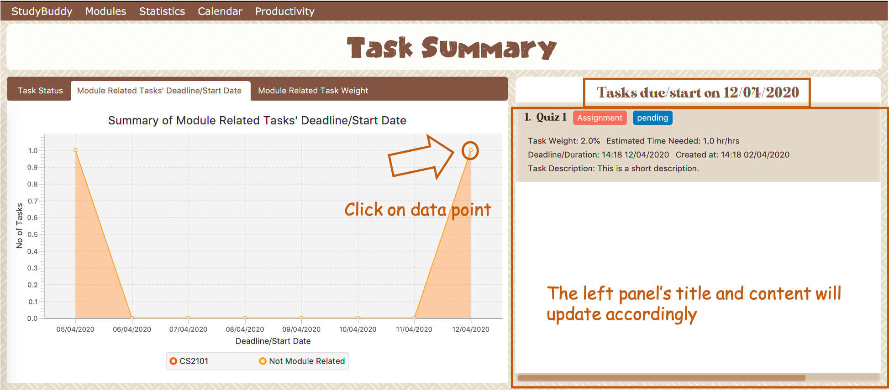Figure 26. right panel update when clicking on area chart’s data point -
Module related tasks' weight
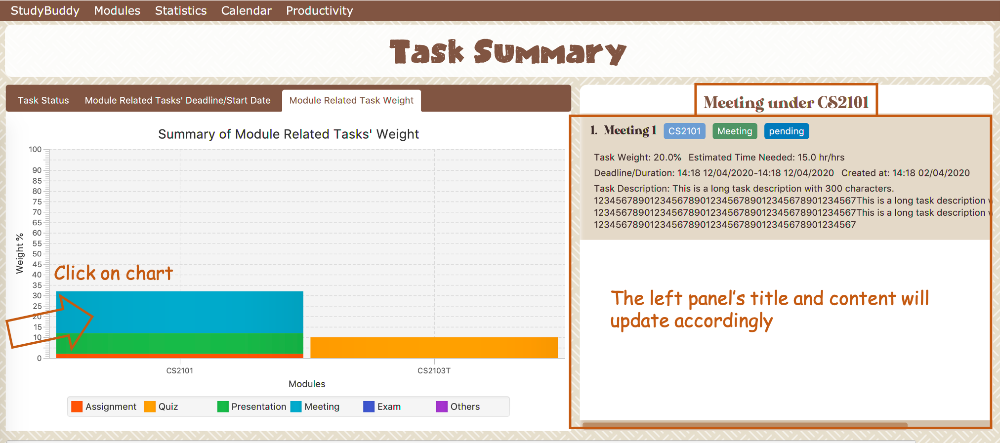Figure 27. right panel update when clicking on bar chart
-
-
-
Dynamic updating
Each chart will update automatically when you perform
addeditdeletesortfindarchivedonelistandclearThe color theme will also change randomly, hope you enjoy :)
3.8. Timers
The timer feature comprises several other features that manage time. Students can use it to plan their schedule, taking into account the various quizzes, assignments and deadlines they have. Features like that include:
-
An alarm that notifies you when a deadline is approaching
-
A stopwatch, which you can use to time how long you spent on the task
3.9. Calendar
The calendar feature allows you to visualise your schedule by displaying the number of task you have for the month. This allows students to plan their time efficiently.
The calendar feature can be toggled by clicking Calendar → Display
-
PreviousandNextbuttons can be used to navigate through previous and next months respectively.Homebutton brings you to the current date, which is in a blue border. -
Clicking on any date will show you all tasks for that day. Keep in mind that the Index shown in this panel cannot be used for other commands.
3.10. UI
You can customize the appearance of your app. You can change the colour of the background, as well as for different modules
3.11. Profile
The profile page shows the detail information of the user, such as:
-
Personal information, such as name, gender, year of study
-
Goal CAP
-
Task history
-
etc
4. FAQ
Q: How do I transfer my data to another Computer?
A: Install the app in the other computer and overwrite the empty data file it creates with the file that contains the data of your previous Study Buddy folder (should be under data → taskList.json).
5. Command Summary
-
Add
add n/NAME p/PHONE_NUMBER e/EMAIL a/ADDRESS [t/TAG]…
e.g.add n/James Ho p/22224444 e/jamesho@example.com a/123, Clementi Rd, 1234665 t/friend t/colleague -
Clear :
clear -
Delete :
delete INDEX
e.g.delete 3 -
Edit :
edit INDEX [n/NAME] [p/PHONE_NUMBER] [e/EMAIL] [a/ADDRESS] [t/TAG]…
e.g.edit 2 n/James Lee e/jameslee@example.com -
Find :
find KEYWORD [MORE_KEYWORDS]
e.g.find James Jake -
List :
list -
Help :
help